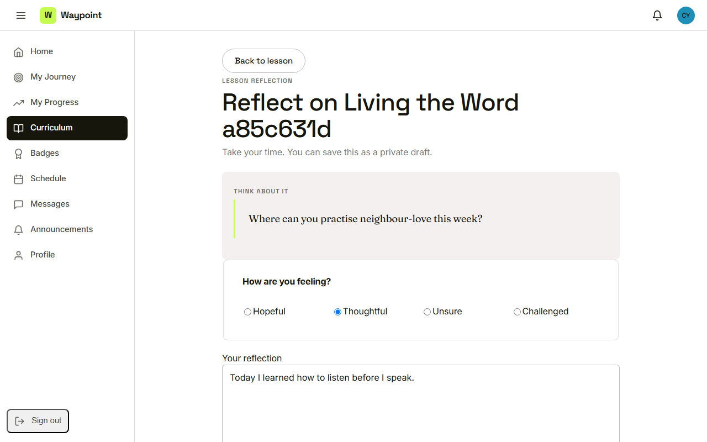
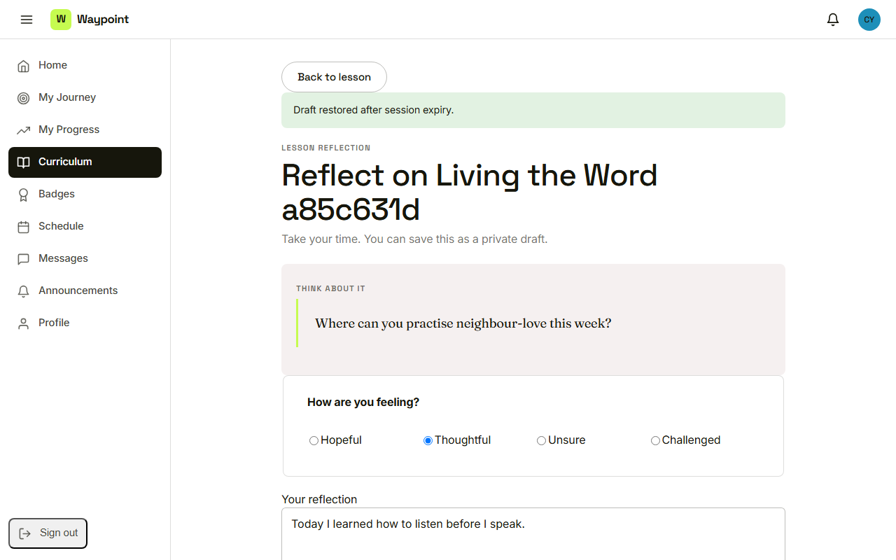

Waypoint · Video 090
Coming back after a session expires
Signed out safely, with the work still there
Work in progress

A reflection in the middle of writing
You have been signed out
Session expired, and the work is saved
Back where she left off

Draft restored after session expiry
Things to remember
Inactive sessions end on their own
The page says what happened and that work was saved
Sign in again returns to the page where she stopped
The draft belongs to the person who wrote it